Lo básico
Reloj registra cuándo entra, sale y almuerza cada persona, con reconocimiento de rostro en una tablet de la tienda. Con esas marcas y el cronograma aprobado calcula llegadas tarde, almuerzos excedidos y horas para nómina.
¿Cuál es su perfil?
Direcciones
| Para qué | Dirección | Quién |
|---|---|---|
| La aplicación | https://reloj.leia-softwarelab.tech | Todos los perfiles con usuario, menos kiosco |
| La tablet de marcación | https://reloj.leia-softwarelab.tech/kioscocon «c» y en minúsculas | Kiosco de cada tienda |
| Conector para Claude o ChatGPT | https://timermcp.leia-softwarelab.tech/mcp | Todos los perfiles con usuario, menos kiosco |
Entrar a la aplicación
- Abra la dirección de la aplicación en el computador o en el celular.
- Escriba su correo de Reloj y su contraseña, y pulse Entrar.
- A la izquierda (o arriba en el celular) está el menú. Debajo aparece su alcance: las tiendas que usted puede ver. Si una tienda no aparece, no está a su cargo.
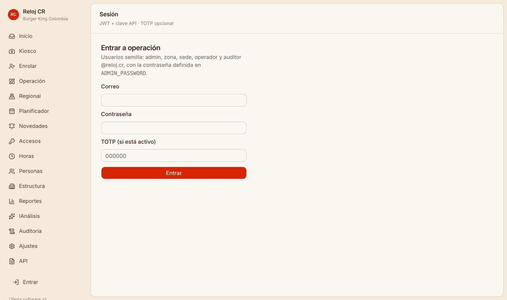
Cómo fluye la semana
Palabras que verá en la app
- Cronograma
- La programación semanal de turnos de una tienda, de lunes a domingo. Pasa por estos estados: borrador (se está armando), enviado (espera al regional), aprobado (vigente), devuelto (con observaciones para corregir) y sustituido (lo reemplazó una versión nueva).
- Turno
- Hora de entrada, hora de salida y minutos de almuerzo de un día. Un turno puede cruzar la medianoche: 20:00 a 04:00 es un solo turno.
- Responsable de turno
- Gerente o coordinador. Siempre debe haber uno en tienda mientras está abierta.
- Franja sin responsable
- Horas del día en que la tienda abre y no hay gerente ni coordinador en turno.
- Novedad
- Vacaciones, incapacidad, capacitación, licencia o retiro. La programada se registra con anticipación. La urgente pasa el mismo día, exige causa y la aprueba el regional.
- Excepción del día
- Un ajuste puntual de asistencia: justificado (por ejemplo, una cita médica), franco o no labora, o cambio de turno.
- Enrolar
- Registrar el rostro de un colaborador para que la tablet lo reconozca. Requiere su consentimiento.
- Acceso
- Permiso para que un colaborador marque en otra tienda de la región, además de la suya.
- Movilidad
- Préstamo de un colaborador a otra tienda por unos días: cobertura, capacitación o apoyo. No cambia su tienda base.
- Llegada tarde
- Entrada después de la hora del turno aprobado, con 10 minutos de gracia.
- Almuerzo excedido
- El tiempo entre «Salida almuerzo» y «Entrada almuerzo» supera los minutos de almuerzo del turno.
- Respaldo PIN
- Marcación excepcional cuando la tablet no reconoce a alguien. La autoriza un supervisor con su PIN y un motivo, y queda en la auditoría.
Usuarios del piloto
| Perfil | Usuario | Qué tiendas ve |
|---|---|---|
| Superadmin | admin@reloj.cr | Todo el sistema |
| Gerente regional | regional.caribe@reloj.cr | Región Caribe: AP y BV |
| Gerente de tienda | gerente.ap@reloj.cr | Solo Alto Prado |
| Gerente de tienda | gerente.bv@reloj.cr | Solo Buenavista |
| Coordinador | coordinador.ap@reloj.cr | Solo Alto Prado |
| Recursos Humanos | rrhh@reloj.cr | Todas las tiendas |
| Auditor | auditor.prueba@reloj.cr | Todas, solo lectura |
| Kiosco | kiosco.ap@reloj.cr · kiosco.bv@reloj.cr | La tablet de su tienda |
Las contraseñas las entrega el administrador a cada persona; no se escriben en este manual. Los usuarios se crean desde el servidor, no desde la app.
Qué puede hacer cada perfil
Cada perfil hace solo lo de su rol y solo en sus tiendas. La app vuelve a comprobar el permiso en cada acción, también cuando se trabaja con Claude o ChatGPT.
Sí puede hacerlo · Ver solo consulta · — no puede
| Acción | Kiosco | Coord. | Gerente | Regional | RR. HH. | Auditor | Superadmin |
|---|---|---|---|---|---|---|---|
| Marcar en la tablet (los colaboradores) | Sí | — | — | — | — | — | — |
| Activar la tablet de su tienda | Sí | Sí | Sí | Sí | Sí | — | Sí |
| Revocar una tablet | — | — | Sí | Sí | — | — | Sí |
| Enrolar rostros | — | Sí | Sí | Sí | Sí | — | Sí |
| Ver marcaciones y asistencia | — | Sí | Sí | Sí | Sí | Ver | Sí |
| Registrar excepciones del día | — | Sí | Sí | Sí | Sí | — | Sí |
| Aprobar correcciones de marcación | — | — | Sí | Sí | — | — | Sí |
| Ver el cronograma | — | — | Sí | Sí | Ver | Ver | Sí |
| Armar y enviar el cronograma | — | — | Sí | Sí | — | — | Sí |
| Aprobar o devolver el cronograma | — | — | — | Sí | — | — | Sí |
| Registrar novedades | — | — | Sí | Sí | Sí | Ver | Sí |
| Aprobar novedades urgentes y horas adicionales | — | — | — | Sí | — | — | Sí |
| Autorizar accesos y movilidad entre tiendas | — | — | — | Sí | — | — | Sí |
| Control de horas | — | — | Sí | Sí | Sí | Ver | Sí |
| Crear, editar, trasladar o retirar personas | — | — | — | — | Sí | — | Sí |
| Ver salario en la ficha | — | — | — | — | Sí | — | Sí |
| Configurar tipos de jornada | — | — | — | — | Sí | — | Sí |
| Expediente del colaborador en PDF | — | — | Sí | Sí | — | Ver | Sí |
| Historial de auditoría | — | — | Sí | Sí | Ver | Ver | Sí |
| Crear regiones y tiendas, ajustes globales | — | — | — | — | — | — | Sí |
| Trabajar con Claude o ChatGPT | — | Sí | Sí | Sí | Sí | Sí | Sí |
Colaborador de tienda
Usted no necesita usuario ni contraseña. Solo marca con su rostro en la tablet de la tienda, cuatro veces al día.
Antes del primer día
Su gerente o coordinador lo enrola: le toma tres fotos del rostro en la app y le pide su consentimiento para usar sus datos biométricos (Ley 1581 de 2012). Sin ese paso la tablet no lo reconoce.
Sus cuatro marcas
- Párese frente a la tablet y ponga el rostro dentro del óvalo. Quítese gorra o tapabocas si los tiene puestos.
- Cuando aparezca el recuadro verde sobre su cara, pulse el botón que corresponde.
- La pantalla muestra su nombre, la marca, la fecha, la hora y la tienda. Si dice otro nombre, avise de inmediato a su coordinador o gerente.
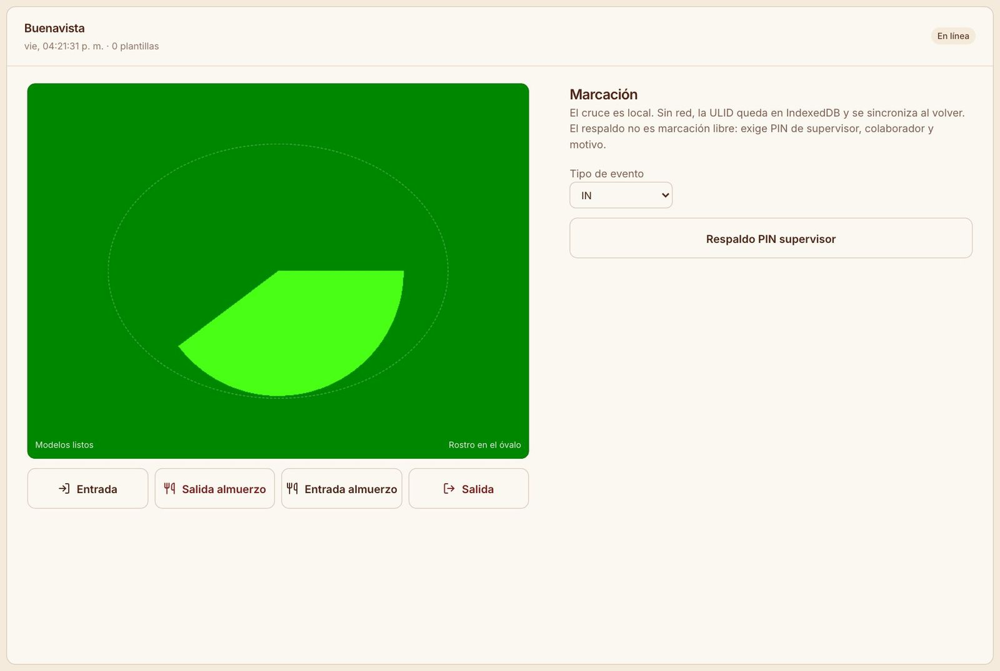
Cómo se mide su día
- Llegada tarde: cuenta si su Entrada es más de 10 minutos después de la hora de su turno aprobado.
- Almuerzo: se compara el tiempo entre sus dos marcas de almuerzo con los minutos que tenía programados (normalmente 30).
- Horas trabajadas: de Entrada a Salida, menos el almuerzo. El trabajo después de las 19:00 cuenta como nocturno.
Si algo sale mal
Kiosco
Un usuario por tienda que solo sirve para activar la tablet de marcación. Una vez activa, la tablet muestra únicamente la cámara y los cuatro botones.
Activar la tablet Una sola vez
- En la tablet, abra Chrome y vaya a
https://reloj.leia-softwarelab.tech/kiosco(con «c» y en minúsculas). - En Tienda escriba el código o el nombre:
APoAlto Prado. - En Contraseña del kiosco escriba la contraseña que le entregó el administrador y pulse Activar kiosco.
- Cuando el navegador pregunte, pulse Permitir para usar la cámara.
- Espere a que abajo a la izquierda diga Modelos listos. La tablet ya puede marcar.
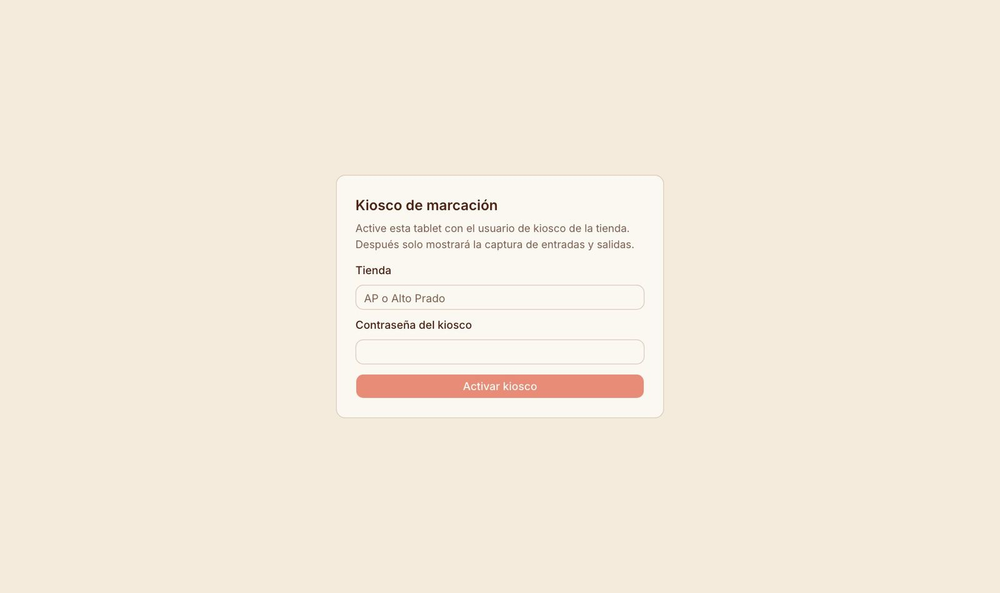
Marcación con PIN de supervisor Excepción
Cuando la tablet no reconoce a alguien (rostro sin enrolar, mala luz, cámara dañada), un supervisor puede registrar la marca:
- Pulse Respaldo PIN supervisor.
- Elija el tipo de evento (Entrada, Salida, etc.) y al colaborador.
- Escriba el motivo y el PIN de supervisor, y pulse Autorizar marcación.
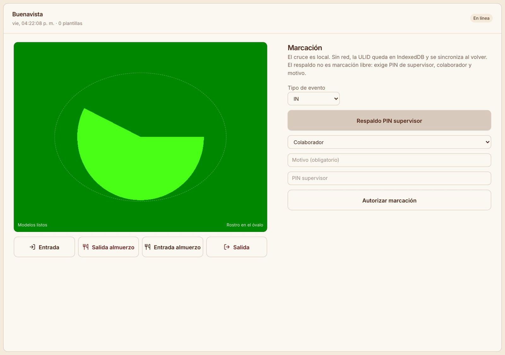
Los tres datos son obligatorios y la marca queda en la auditoría con el motivo. No la use como costumbre: si alguien no es reconocido seguido, enróllelo de nuevo.
Tablet perdida o cambiada Cuando pase
El gerente de tienda o el regional entra a Estructura, busca las tablets de la tienda y pulsa Revocar en la que ya no se usa. Para activar una nueva se necesita otra vez la contraseña del kiosco.
El kiosco no puede
Entrar a la aplicación, consultar datos, ni conectarse a Claude o ChatGPT. Si alguien intenta entrar con este usuario en la página normal, la app responde «Este usuario es solo de kiosco: ábralo en /kiosco».
Coordinador
Apoya la operación diaria de su tienda: que la tablet funcione, que todos estén enrolados y que las marcas del día estén completas. En la app su perfil aparece como «Operador».
Pantallas que usa
Su rutina
Al abrir la tienda Diario
- Verifique que la tablet esté encendida, en la pantalla de marcación y con Modelos listos. Arriba a la derecha debe decir En línea.
- Si muestra la pantalla de activación, vuelva a activarla con el usuario kiosco de la tienda.
- En Operación, revise en Terminales que la tablet haya reportado señal reciente.
Enrolar a un colaborador Ingresos
- Entre a Enrolar y elija al colaborador de la lista. Si no aparece, RR. HH. todavía no lo ha creado: pídaselo.
- Léale el texto de consentimiento y, si acepta, marque la casilla. Sin consentimiento no se puede enrolar.
- Con el rostro frente a la cámara, capture las 3 muestras (mínimo 2). Pida que gire un poco la cabeza entre una y otra.
- Pulse Guardar. Pida que haga una marca de prueba en la tablet.
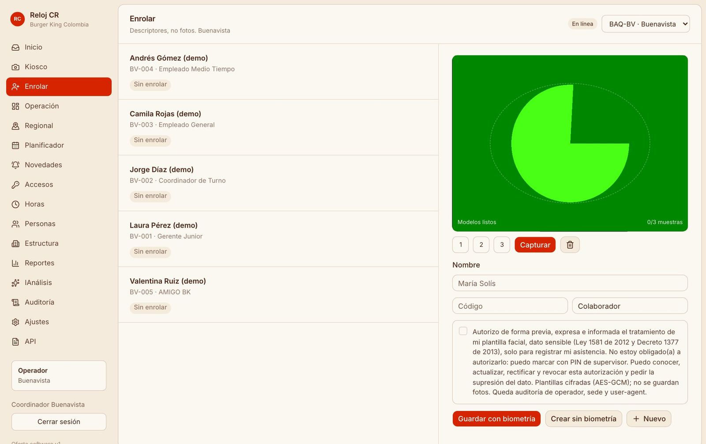
Revisar las marcas del día Diario
- En Reportes, elija su tienda y el día. Verá cada persona con su estado: Presente, Tarde, Ausente, Salida temprana u Omisión (le falta una marca).
- En Operación, revise las Anomalías abiertas (por ejemplo, una marca muy fuera de turno o en otra tienda).
- Si alguien olvidó marcar, en Operación seleccione la marcación y registre la Corrección con el motivo. El gerente de tienda la aprueba.
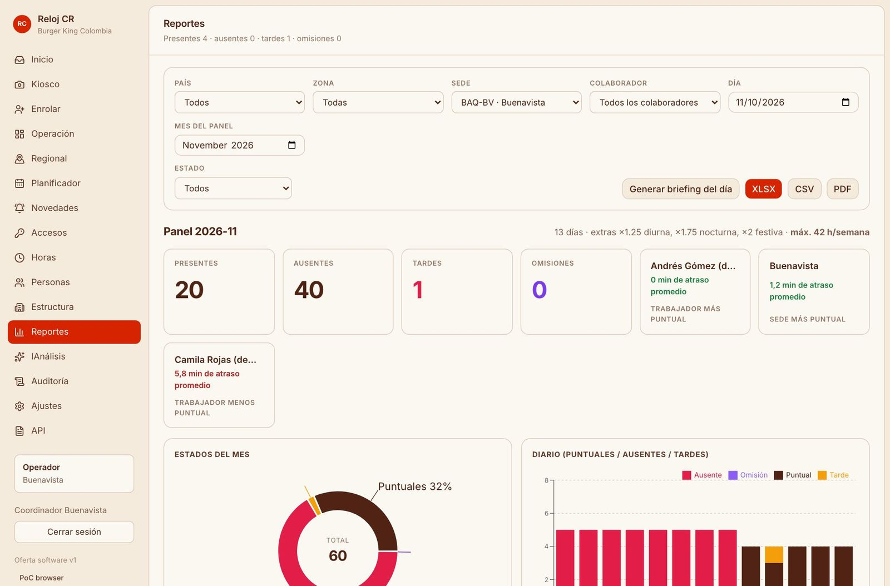
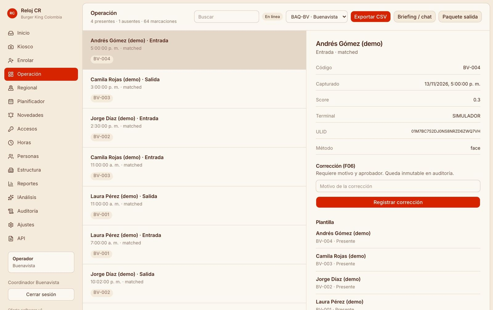
Registrar una excepción del día Cuando pase
- En Reportes, seleccione la fila del colaborador y el día.
- En Excepción del día elija: Justificado (cita médica, diligencia autorizada), Franco / no labora o Cambio de turno.
- Escriba el motivo y guarde. La ausencia o tardanza deja de contar como injustificada.
Vacaciones, incapacidades y licencias no son excepciones: son novedades y las registra el gerente o RR. HH.
No puede, y a quién acudir
Gerente de tienda
Arma cada semana el cronograma de su tienda, lo envía al regional y vela por que las marcas y novedades de su gente estén al día.
Pantallas que usa
Su semana
Armar el cronograma en el Planificador Semanal
- Entre a Planificador. En Semana (lunes) elija el lunes de la semana a programar.
- Si la tienda no tiene cronograma esa semana, pulse Crear cronograma. Queda en borrador.
- En la grilla verá a su gente en filas y los días en columnas. Seleccione una o varias celdas (una persona, uno o varios días).
- Elija qué poner:
- Turno: escriba entrada, salida y minutos de almuerzo (normalmente 30).
- Descanso: el día libre de la semana.
- Novedad: vacaciones, incapacidad, etc., ya registradas.
- Vaciar: borra lo que había en la celda.
- Pulse Aplicar. Verá «N celda(s) modificadas; pulse Guardar».
- Repita con el resto de su equipo y pulse Guardar (N). Los totales se recalculan al guardar.
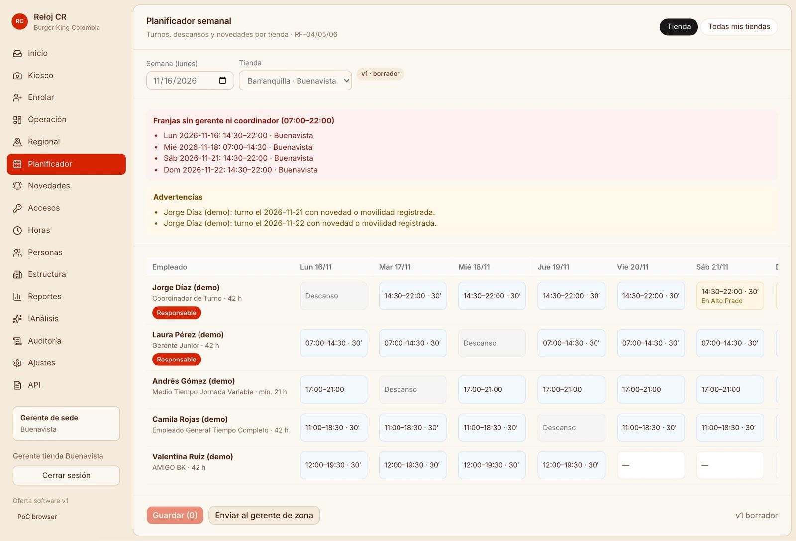
Revisar antes de enviar Semanal
Antes de enviar, revise en la misma pantalla:
- Total de cada persona: debe coincidir con su jornada (42 horas a tiempo completo desde julio de 2026). Cada día de vacaciones o incapacidad descuenta 7 horas.
- Ningún día vacío: cada persona debe tener turno, descanso o novedad los siete días.
- Un descanso por semana como mínimo.
- Responsable: franjas en que la tienda abre sin gerente ni coordinador. Corríjalas moviendo un turno.
- Advertencias: más de 9 horas en un día, turnos fuera del horario de la tienda o días distintos a la jornada de la persona.
- Ficha incompleta: la persona no tiene tipo de jornada o cédula. Pídale a RR. HH. que la complete.
Enviar al regional y corregir si vuelve Semanal
- Con todo guardado, pulse Enviar al gerente de zona. El estado cambia a enviado y la pantalla dice «En revisión del gerente de zona». Ya no se puede editar.
- Si el regional lo aprueba, queda vigente y Reloj empieza a medir tardanzas y almuerzos contra esos turnos.
- Si lo devuelve, lea sus observaciones arriba de la grilla, corrija, pulse Guardar y envíe de nuevo.
Cambiar un cronograma ya aprobado Cuando pase
- En el Planificador, con la semana aprobada en pantalla, escriba la justificación del cambio (obligatoria) y pulse Nueva versión.
- Se crea un borrador con los mismos turnos. La versión aprobada sigue vigente mientras tanto.
- Haga los cambios, guarde y envíe. Cuando el regional apruebe la nueva versión, la anterior queda como sustituida.
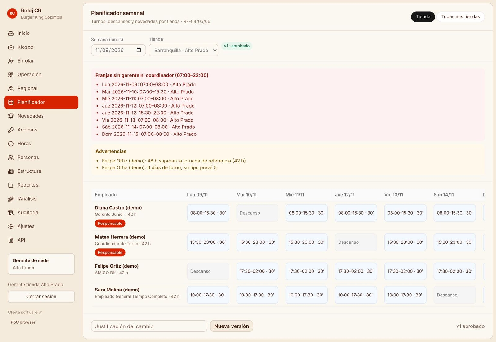
Registrar una novedad Cuando pase
- Entre a Novedades y pulse Registrar novedad.
- Elija al empleado, el tipo (vacaciones, incapacidad, capacitación, licencia) y las fechas.
- Elija la clase:
- Programada: se sabe con anticipación. Queda en el cronograma de inmediato.
- Urgente: pasó hoy o no estaba prevista. Escriba la causa; la aprueba el regional.
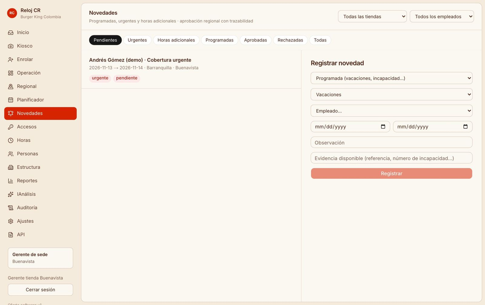
Aprobar correcciones y revisar el día Diario
- En Operación verá las marcaciones del día y las correcciones que registró el coordinador.
- Revise el motivo de cada corrección y apruébela si corresponde. Queda en la auditoría y no se puede borrar.
- En Horas, elija la semana y abra la fila de una persona para ver cada día: programado, entrada, salida a almuerzo, regreso, salida, neto, almuerzo e incidencias. Si dice sin aprobado, esa semana no tiene cronograma aprobado.
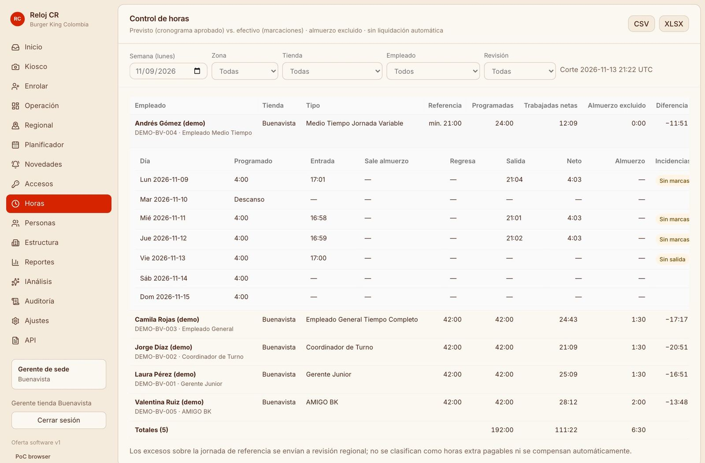
No puede, y a quién acudir
Gerente regional
Revisa y aprueba los cronogramas de las tiendas de su región, programa a gerentes, coordinadores y relevos, y autoriza lo que sale de lo normal.
Pantallas que usa
Programar a los encargados de la región Semanal, primero
Antes de que cada gerente arme su tienda, defina dónde trabaja cada encargado (gerente, coordinador, relevo) y sus descansos:
- En el Planificador, en cada tienda, ponga el turno o el descanso de su gerente y coordinadores.
- Si un encargado cubre el descanso del gerente de otra tienda, primero autorice su movilidad (abajo) y luego póngale el turno en la tienda destino.
- Confirme que todas las tiendas tienen encargado todos los días y que nadie queda en dos tiendas el mismo día.
Con Claude esto se hace en un solo mensaje («Alto Prado D lunes, Leidy cubre el lunes…»): vea la skill cronograma-encargados en el capítulo «Con Claude».
Aprobar o devolver un cronograma Semanal
- En Regional verá cada tienda con su estado: sin cronograma, borrador, enviado, aprobado o devuelto, y si hay versión vigente.
- Abra el enviado en el Planificador. Revise totales, descansos, franjas sin responsable y advertencias.
- Si está bien, pulse Aprobar. Pasa a ser la versión vigente y Reloj mide la semana contra él.
- Si no, escriba en Observaciones qué corregir (obligatorio) y pulse Devolver. El gerente lo verá arriba de su grilla.
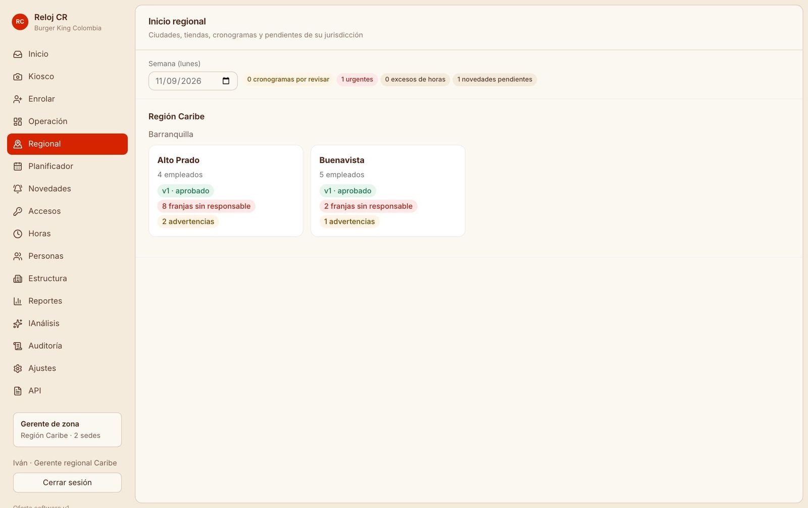
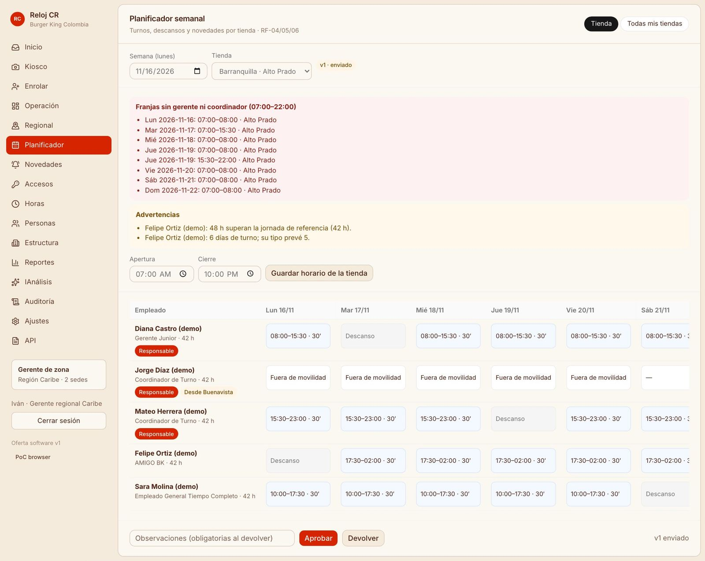
Decidir novedades Diario
- En Novedades use las pestañas Pendientes, Urgentes y Horas adicionales.
- Seleccione una para ver empleado, tienda, periodo, horas excedentes, causa, evidencia y quién la registró.
- Pulse Aprobar o Rechazar. Rechazar exige un comentario.
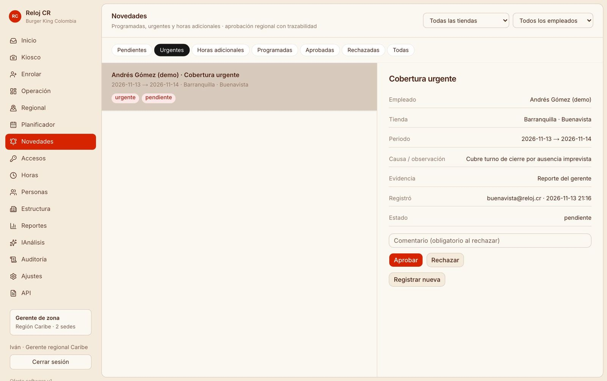
Las horas adicionales aparecen cuando una persona supera su jornada semanal. Aprobarlas es lo que permite pagarlas como extra; el máximo legal es 12 horas extra por semana.
Accesos y movilidad entre tiendas Cuando pase
Acceso: en Accesos, busque al empleado y marque las tiendas habilitadas para el biométrico. Así puede marcar en otra tienda de su región, de forma permanente o hasta una fecha.
Movilidad: para prestar a alguien unos días a otra tienda:
- En Accesos pulse Autorizar movilidad.
- Elija empleado, tienda destino, fechas desde y hasta, y motivo (cobertura, capacitación, apoyo).
- Guarde. La persona aparece en el cronograma y en la tablet de la tienda destino esos días. Su tienda base no cambia.
En Historial de autorizaciones verá todas, con su estado (vigente o fuera de periodo). Puede Revocar una antes de tiempo.
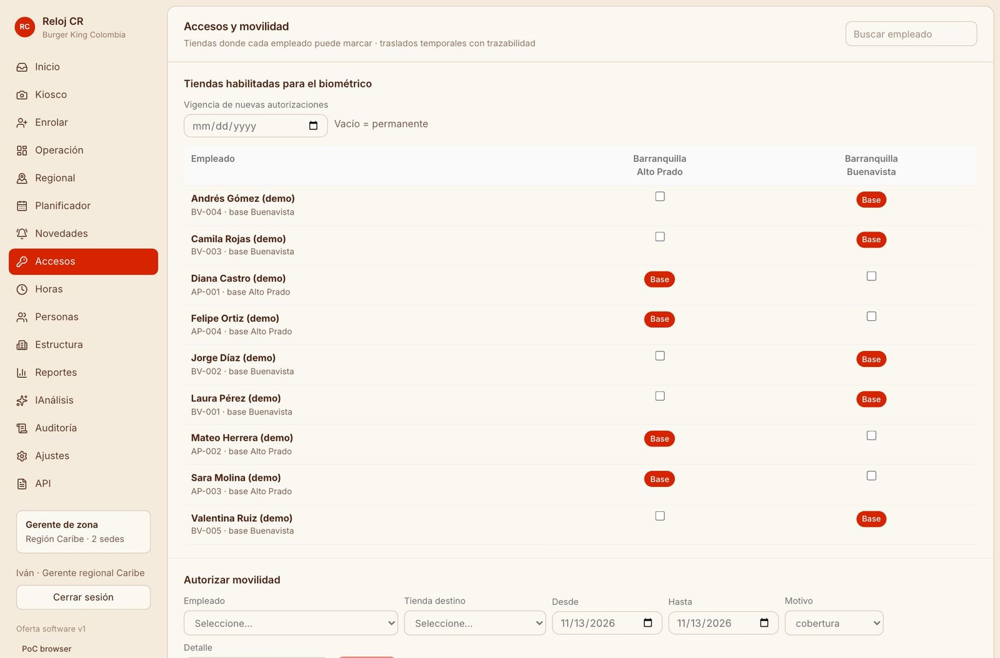
No puede, y a quién acudir
Recursos Humanos
Es dueño de la información de las personas: fichas, jornadas, ingresos, traslados y retiros. Cierra los periodos con las horas listas para nómina.
Pantallas que usa
Crear un colaborador nuevo Ingresos
- En Personas, elija arriba la tienda y pulse Nuevo. A la derecha aparece el formulario «Nuevo colaborador».
- Datos generales: nombre, código (por ejemplo AP-14), puesto y sede.
- En Ficha laboral: identificación (cédula), tipo de jornada, salario mensual y estado Activo.
- Pulse Crear.
- Avise al gerente o coordinador de la tienda para que lo enrole. Hasta entonces no puede marcar.
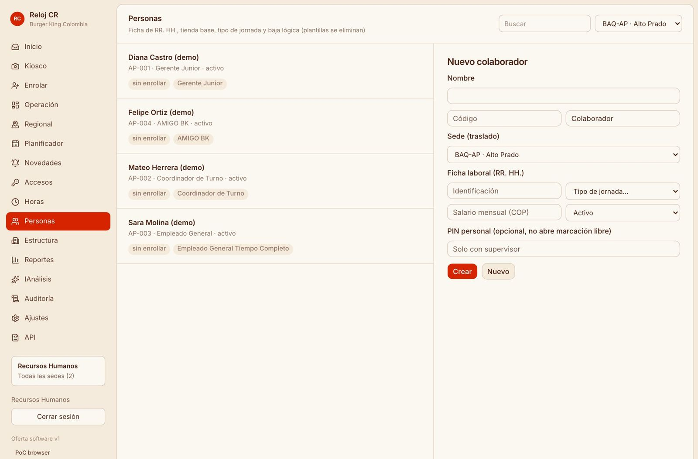
Trasladar o retirar Cuando pase
Traslado definitivo: abra la ficha, cambie Sede (traslado) y guarde. Para un préstamo de días no use esto: es una movilidad que autoriza el regional.
Retiro:
- En Novedades, registre la novedad retiro con la fecha del último día.
- En la ficha, cambie el estado a Retirado ese día y guarde. Desde ese momento la tablet deja de reconocerlo.
- Pulse Baja + borrar biometría para eliminar su plantilla facial (Ley 1581). La persona sale de la lista, pero su historial de marcas se conserva para auditoría. Hágalo después de cerrar la nómina del periodo en que se retiró.
- Si la persona tenía usuario en Reloj (gerente, coordinador), pida al administrador que lo desactive.
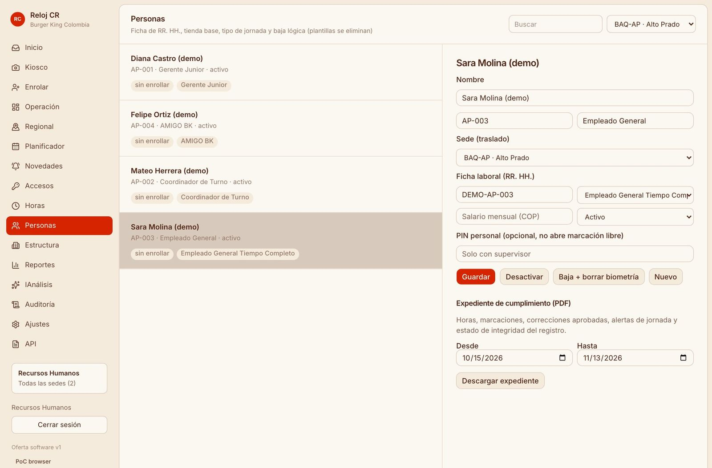
Tipos de jornada Configuración
En Personas › Tipos de jornada se define cada tipo de contrato: días por semana, horas por semana (o mínimo), minutos de almuerzo, si es responsable de turno (gerente o coordinador), vigencia desde y si tiene días variables. Pulse Editar para cambiar uno y Guardar tipo.
Las horas del tipo son la referencia para validar cronogramas y detectar excesos. Desde julio de 2026 la jornada máxima es 42 horas semanales (Ley 2101 de 2021).
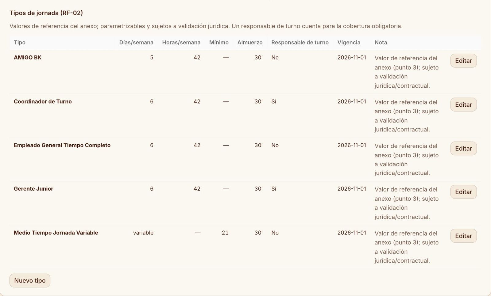
Cerrar la quincena o el mes Quincenal
- Confirme con los regionales que todas las semanas del periodo tengan cronograma aprobado.
- En Horas, filtre Con pendientes. Resuelva o pida resolver cada caso: marcas incompletas, trabajo sin turno aprobado, excesos sin aprobar.
- Exporte con XLSX. En Reportes verá horas ordinarias, extra diurnas, nocturnas y festivas, y recargos.
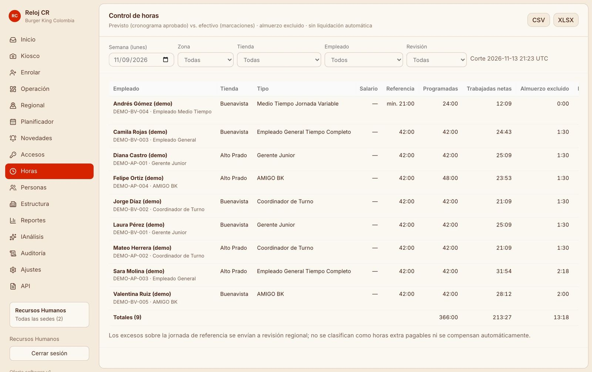
Con Claude, la skill nomina-corte hace este cierre y entrega un Excel con las horas por tipo y una hoja de pendientes. Reloj no calcula valores en pesos: eso lo hace nómina.
Expediente y datos personales
El expediente de cumplimiento en PDF (marcas, correcciones y novedades de una persona entre dos fechas) lo descargan el gerente, el regional o el auditor desde la ficha en Personas.
No puede, y a quién acudir
Auditor
Consulta todo, en todas las tiendas, y no cambia nada. Verifica que lo registrado sea confiable.
Revisar la integridad Mensual
- Entre a Auditoría. Arriba verá el sello de integridad. En verde significa que ningún registro fue alterado por fuera de la app.
- Cada evento muestra cuándo, quién lo hizo, sobre quién y en qué sede. Seleccione uno para ver los datos técnicos.
- Fíjese en correcciones de marcación, marcas con PIN de supervisor y novedades urgentes: son las excepciones que vale la pena muestrear.
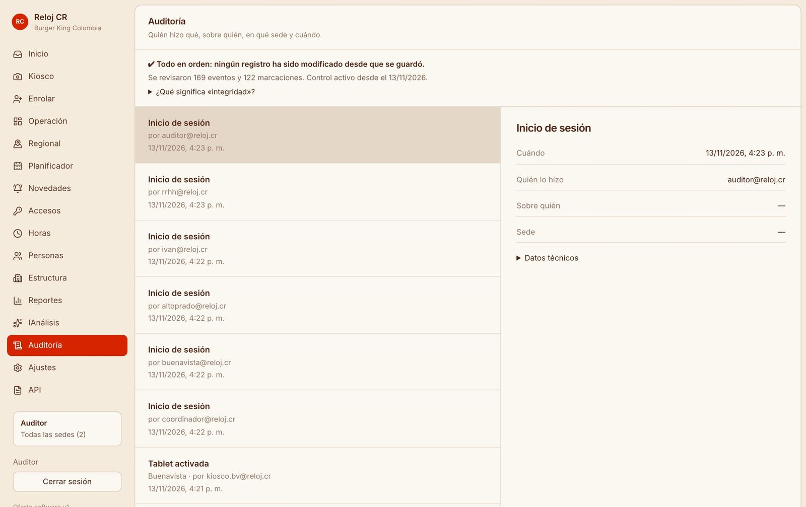
Qué más puede consultar
- Reportes y Horas: asistencia, horas por tipo y excesos.
- Planificador y Novedades: cronogramas y novedades de todas las tiendas, con su historial de aprobación.
- Personas: el expediente en PDF de un colaborador entre dos fechas.
No puede
Marcar, enrolar, activar tablets, crear o editar datos, ni aprobar nada.
Superadmin
Administra la estructura, los ajustes y la seguridad. Tiene todos los permisos de los demás perfiles, en todas las tiendas.
Estructura: regiones y tiendas
- En Estructura, use Nueva región (nombre y país) y Nueva sede (código, nombre, ciudad y región).
- En cada sede verá sus tablets activas y podrá revocarlas.
- Para usuarios nuevos (gerentes, coordinadores, kioscos), pida al técnico que los cree en el servidor con su perfil y su tienda o región.
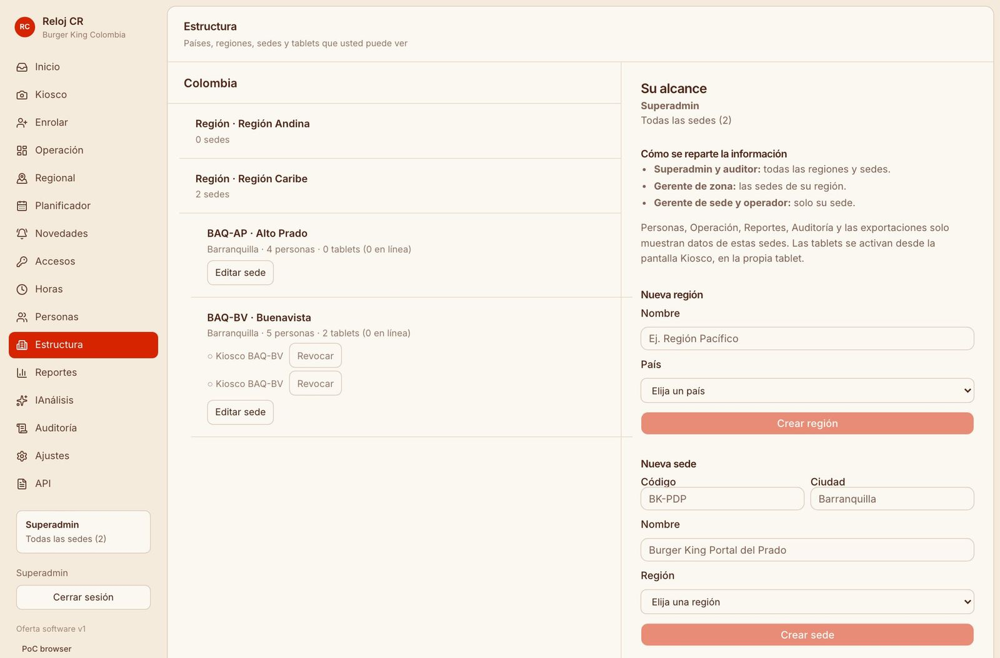
Ajustes
- Política de software: tipos de evento de la tablet, retención de datos en días y nuevo PIN de supervisor.
- Condiciones legales: recargos de extra diurna, nocturna y festiva, ventana nocturna, plazo para corregir marcas, alerta por faltas injustificadas y máximo de horas por semana.
- Informe mensual: dirección a la que se envía el informe de nómina firmado.
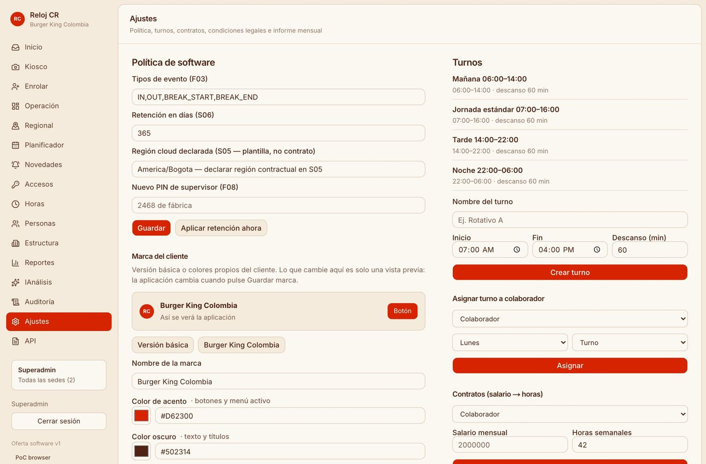
Trabajar con Claude o ChatGPT
Con el conector, cada persona le pide las cosas a Claude o a ChatGPT por texto o por voz, con su propio usuario. Tiene los mismos permisos y las mismas tiendas que en la app, y todo queda en la auditoría a su nombre.
Conectar Una vez por persona
- En Claude: Configuración › Conectores › Añadir conector personalizado. En ChatGPT: Ajustes › Aplicaciones (modo desarrollador).
- Nombre:
Reloj CR. URL:https://timermcp.leia-softwarelab.tech/mcp. - Se abre la página «Reloj CR pide actuar como usted». Escriba su correo y contraseña de Reloj.
- En cada chat, active Reloj CR en el menú de herramientas. La conexión dura 12 horas.
Si aparece «No se pudo añadir el conector», use Usar tu propio cliente OAuth con el ID de cliente que le dé el administrador.
Descargue las skills
Una skill le enseña al asistente a hacer completa una tarea de su operación: qué preguntar, qué herramientas de Reloj usar, qué validar y cómo mostrar el resultado. Es el mismo contenido para Claude y para ChatGPT; solo cambia el archivo. Descargue solo las de su perfil.
Arma el cronograma de la semana desde mensajes de voz o texto, revisa horas, descansos y cobertura, y lo muestra como la planilla de la tienda.
Programa descansos y relevos de gerentes y coordinadores entre tiendas, y muestra la planilla regional con la «D» de cada tienda.
Cierra la quincena o el mes: Excel con horas por tipo y la lista de pendientes con quién debe resolverlos.
Puntualidad y almuerzos excedidos por tienda y persona, con reincidentes.
Guía altas, traslados y retiros, y dice quién falta por enrolar.
Semanas sobre 42 horas, extras sobre 12, semanas sin descanso y trabajo dominical habitual.
Instalar en Claude
- Descargue el archivo .skill de su skill.
- En Claude, abra Configuración › Capacidades y active Ejecución de código y creación de archivos.
- En la misma página, en Habilidades, pulse Subir habilidad y elija el archivo.
- Verifique que la habilidad quede activada.
- Abra un chat nuevo, active Reloj CR en el menú de herramientas y pida la tarea con sus palabras, por ejemplo «Arma el cronograma de la semana del 23».
Instalar en ChatGPT
- Descargue el archivo .zip de su skill. No lo descomprima.
- En ChatGPT, abra Skills (en el menú lateral o en Plugins › Skills), pulse Crear y luego Subir desde el computador.
- Elija el .zip y confirme.
- En un chat nuevo, active el conector Reloj CR y pida la tarea.
SKILL.md en las instrucciones y suba como archivos lo que haya en las carpetas assets y scripts.Ejemplos de lo que puede pedir
Para la semana del 16, Melissa de 9 y media a 6 lunes y martes, el viernes descansa.
¿Qué me falta para enviar el cronograma?
Envíalo al regional.
Alto Prado D lunes y martes; Leidy cubre esos días.
¿Qué cronogramas están pendientes de aprobar?
Devuelve el de Buenavista: falta cubrir el domingo.
Cierra la segunda quincena de noviembre de Alto Prado.
¿Quién llegó tarde la semana pasada?
¿Quién falta por enrolar?
¿Quién no ha marcado hoy en Alto Prado?
Resumen de alertas y anomalías de la semana.
Si algo falla
| Qué pasa | Por qué suele pasar | Qué hacer |
|---|---|---|
| La tablet no reconoce a alguien | No está enrolado, mala luz o cambió mucho su aspecto | Marcar con PIN de supervisor y volver a enrolarlo |
| La tablet dice «No se pudo abrir la cámara» | Se negó el permiso de cámara o se abrió en otro navegador | Abrirla en Chrome y permitir la cámara en la configuración del sitio |
| La tablet pide activarse otra vez | La revocaron o se borraron los datos del navegador | Activarla con el usuario kiosco de la tienda |
La página /kiosco da error | Se escribió con mayúscula o con «k» | Escribir exactamente /kiosco |
| «Credenciales inválidas» | Correo o contraseña con un error, o usuario desactivado | Revisar mayúsculas; si persiste, pedir al administrador |
| «Demasiados intentos» | Varios intentos fallidos seguidos | Esperar un minuto e intentar de nuevo |
| «Sin permiso» o «solo consulta» en una pantalla | Esa acción no es de su perfil | Ver la tabla de permisos y acudir a quien corresponde |
| No puedo editar el cronograma | Está enviado o aprobado | Enviado: pedir al regional que lo devuelva. Aprobado: crear una nueva versión |
| Horas dice «sin aprobado» | La semana no tiene cronograma aprobado | Enviar y pedir al regional que lo apruebe |
| Un colaborador no aparece en el Planificador | No está creado, está en otra tienda o tiene ficha incompleta | RR. HH. lo crea o completa; para préstamos, movilidad del regional |
| Claude no ve las herramientas de Reloj | El conector no está activo en ese chat o venció la sesión | Activar Reloj CR en el menú de herramientas o reconectar |